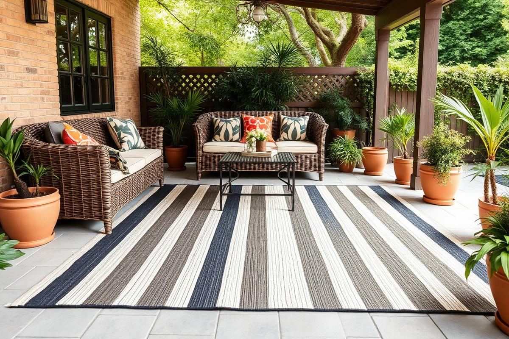
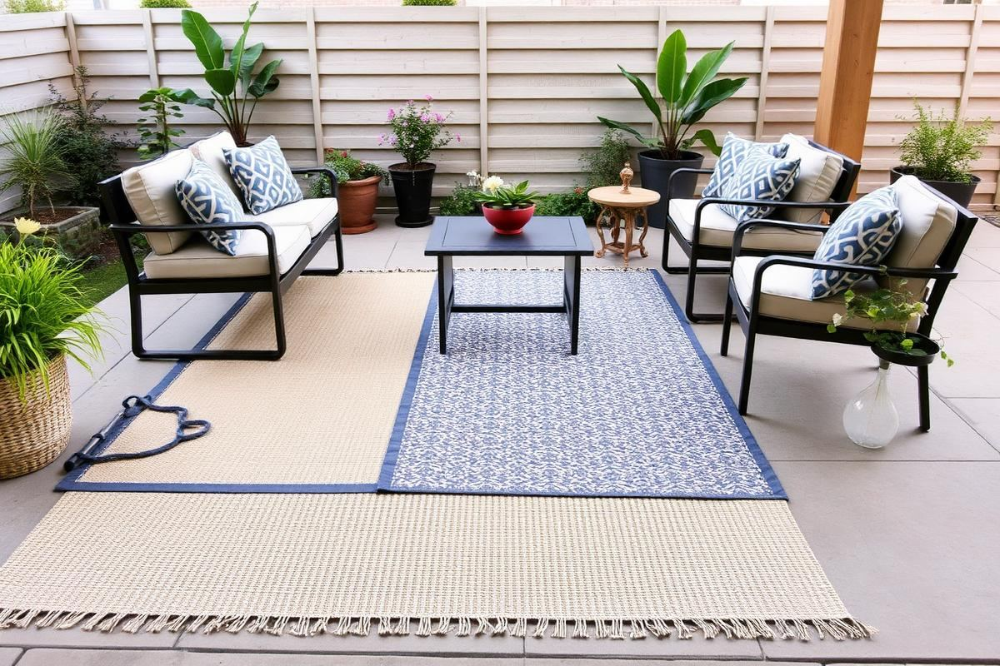
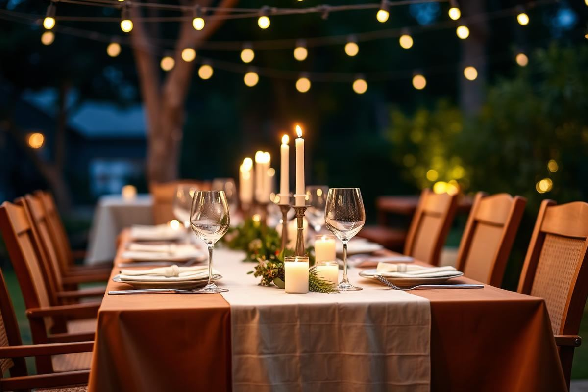

Outdoor Rug Guide: Fibers, Sizes, and Care

Outdoor Rug Guide: Fibers, Sizes, and Care is one of those topics where a little planning goes a long way. In this guide I walk through the process we use in real homes — not just what looks good in a photo, but what actually holds up over time.
Start here
Before you buy or move anything, measure the space and note how you actually use it. The best-looking room is one that matches how you live, so start with the routines: where you sit, where you drop keys, where the light falls in the afternoon.
The essentials
Focus on the pieces that do the most work. Get those right and the rest of the room comes together with much less effort. Aim for materials that patina rather than degrade, and colors you will still like in five years.
- Choose one clear focal point per room.
- Pick materials that improve with age.
- Layer textures instead of adding more colors.
- Leave visual breathing room — negative space is a design element.
Common mistakes
The mistakes we see most often are matching everything too tightly, over-scaling accessories, and skipping proper lighting. Fix those three and most rooms improve overnight.

Strategizing Placement for Impact
Before you even consider materials or patterns, visualize your outdoor rug's role. Is it defining a cozy conversation nook on a sprawling patio, or anchoring a dining set on a smaller balcony? For dining areas, ensure the rug is large enough for all four chair legs to remain on the rug even when pulled out. A common mistake is selecting a rug that’s too small, making the space feel cramped and disjointed. For a 6-seater dining set (typical 72-inch table), aim for at least a 9x12 foot rug. This allows for ample chair movement without snagging on the rug edge. For conversation seating, the general rule of having all front legs of major furniture on the rug still applies, but you can be more flexible. For instance, with a 3-seater sofa and two armchairs, an 8x10 foot rug often works perfectly to unify the space and make it feel intentionally designed rather than an afterthought. Consider its relationship to surrounding pathways and potted plants; it should enhance, not obstruct.
Think about foot traffic. High-traffic areas, like an entryway to a patio door or a path to a grill, demand more durable, lower-pile options. A jute-blend may look beautiful in a low-traffic lounge area, but in a high-traffic zone, it will fray and show wear quickly. Conversely, a synthetic polypropylene rug, while resilient, might feel too utilitarian for a barefoot-friendly lounging space. Always measure your space twice, sketch out your furniture arrangement, and then add at least 18-24 inches on each side beyond your furniture footprint to ensure generous coverage.
Understanding Fiber Performance (Beyond Polypropylene)
Specialty Synthetics for Extreme Conditions
While polypropylene dominates the outdoor rug market, several advanced synthetics offer superior performance for specific needs. Sunbrella® acrylic, for instance, known for its marine-grade durability, offers unparalleled fade resistance and mold/mildew protection, making it ideal for south-facing patios with intense sun exposure. These rugs typically come at a premium, with a 5x7 foot option costing around $250-$450, compared to $90-$180 for standard polypropylene. Another excellent choice is woven vinyl, often used in commercial settings, which is virtually indestructible and impervious to water. Its smooth, flat profile is perfect for areas prone to spills or heavy traffic, and it's incredibly easy to hose down. Prices for woven vinyl can range from $300-$600 for a 6x9 foot size.
Natural Fiber Considerations
- **Jute:** Offers a soft, natural texture and excellent breathability, but it’s highly absorbent and prone to mold in humid climates. Best for covered patios or enclosed sunrooms. A 5x7 foot jute rug typically costs $80-$150.
- **Sisal:** More durable and less absorbent than jute, sisal provides a firmer, textured feel. It’s still susceptible to water damage if left continually wet, so covered outdoor spaces are essential. Expect to pay $120-$200 for a 5x7 foot sisal rug.
- **Seagrass:** Exceptionally resilient and naturally water-resistant due to its waxy coating. However, seagrass can be stiffer underfoot and has a distinct earthy scent that dissipates over time. Great for casual, bohemian aesthetics in semi-covered areas. A 5x7 foot seagrass rug runs about $100-$180.
These natural options, while beautiful, require more diligent care and exposure control than their synthetic counterparts. They are not 'set it and forget it' outdoor solutions for all climates.
Beyond the Basics: Advanced Care and Maintenance
Regular vacuuming and hosing down are foundational, but for true longevity and pristine appearance, a more nuanced approach is required. For synthetic rugs, an annual deep clean is highly recommended. Mix a solution of one gallon of warm water with one cup of white vinegar and a quarter cup of mild dish soap. Use a scrub brush with medium-stiff bristles (avoid metal brushes, which can damage fibers) to work the solution into the rug, paying extra attention to high-traffic areas or visible stains. Rinse thoroughly with a garden hose until all soap residue is gone, as left-over soap can attract dirt. Prop the rug up at an angle or drape it over a fence to ensure maximum airflow for complete drying, which can take 24-48 hours depending on humidity. Never roll up or store a damp outdoor rug, as this creates a perfect environment for mildew.
For natural fiber rugs (jute, sisal, seagrass), avoid prolonged saturation. Spot clean spills immediately with a clean, dry cloth or paper towel, blotting, not rubbing. For tougher stains, use a very lightly dampened cloth with a small amount of specialty natural fiber cleaner. Test in an inconspicuous area first. If these rugs get soaked inadvertently, lay them flat in a sunny, well-ventilated area, flipping them periodically to ensure even drying. Consider rotating your outdoor rug every 3-6 months to distribute wear evenly and minimize sun fading on one side. This is especially important for rugs in partially shaded areas.
Layering and Texture: Adding Depth to Your Outdoor Space
Just like in interior design, layering rugs outdoors can add significant visual interest and define zones. This technique works best with flatweave or low-pile rugs as the base layer to prevent tripping hazards. Start with a large, neutral-toned outdoor rug, such as a 9x12 foot solid gray or natural fiber-look polypropylene. On top, place a smaller, contrasting rug, perhaps a 5x7 foot with a bold pattern or a different texture, to delineate a specific area like a coffee table zone within a larger seating arrangement. For instance, a durable, weather-resistant sisal-look polypropylene base layered with a vibrant tile-patterned vinyl rug in the conversation area can be stunning.
Consider the textures. A smooth, tightly woven rug can be contrasted with a shag-like outdoor rug (made from weather-resistant synthetics, of course) for a more luxurious feel. Don't be afraid to mix and match. A flat-weave base rug with a subtly textured trellis pattern, topped with a smaller, solid-color braided rug, provides both visual and tactile depth. Prices for base rugs can range from $150-$400 for a 9x12ft, while accent rugs can be found for $80-$250 for a 5x7ft. Ensure the colors and patterns complement each other, avoiding too many competing motifs. The key is to create a cohesive yet dynamic look that mimics the richness of an indoor space, extending your decor seamlessly to the outside world.
Key takeaways
- Match the room to how you actually live.
- Anchor with one main piece and clear lighting.
- Layer textures, not colors.
- Leave breathing room around every object.
Frequently asked questions
Where should I start?
Start with the largest piece and the light. Everything else — art, textiles, small objects — is easier to place once those two anchors are set.
What is a realistic budget?
Prioritize the pieces you touch every day. Spend more on those and less on decorative items, which are easy to swap over time.
How long should this last?
A well-chosen main piece should last 10–15 years. Refreshes come through textiles, art, and accessories, not full replacements.

Sophia Bennett is a certified interior stylist and the senior editor at Styleire. She has spent more than eight years helping homeowners and renters create warm, functional interiors, with hands-on experience across small city apartments and family homes. Her work has been informed by close collaboration with independent designers, craftspeople, and product testers.
View full profile →Related reading

Living Room Rug Size Guide (With Real Room Examples)
A too-small rug is the most common decorating mistake. Here is how to size a rug for any living room layout.

Outdoor Patio Styling Guide: Furniture, Rugs, and Light
A styled patio uses the same rules as a good living room — with materials that survive the weather.

Outdoor Dining Setup: A Simple Blueprint
Outdoor Dining Setup: A Simple Blueprint — a clear, editor-tested guide covering the essentials without the filler.